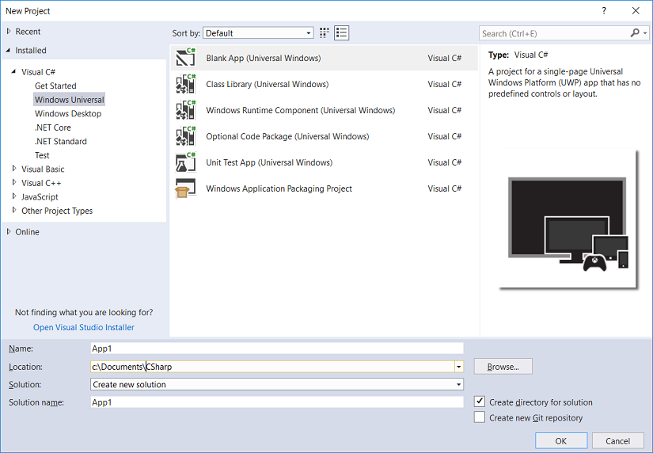

Overview
The UWP Scanner SDK provides an API for Windows UWP applications to communicate/manage Zebra barcode scanners. Host connected Zebra barcode scanners can be discovered via the UWP Scanner SDK. The SDK allows capture of barcode decode events and configuration of connected Zebra barcode scanners (enabling and disabling specific barcode symbologies).
Getting Started with the UWP Scanner SDK for Windows
Overview
This document provides step-by-step instructions to create Windows UWP applications that work with Zebra barcode scanners. The Scanner SDK allows building Microsoft UWP Zebra barcode scanner enabled applications for Window 10 with Visual Studio 2017. The SDK provides the ability to manage Zebra barcode scanners, perform various operations with connected barcode scanners, configure connected scanners and retrieve other information related to scanners connected over USB. All available APIs are defined under the Zebra.BarcodeScanner.SDK and NGScannerSDK.APIContracts namespaces. The application uses a DataCaptureDeviceAdapter object to interact with a scanner. Use a DataCaptureDeviceAdapter object instance to connect with a scanner and receive barcode decode events.
Creating a Windows Project
To create a C# Windows project in Visual Studio 2017:
Start Visual Studio 2017->Select File-> New-> Project->Visual C#, create a new Blank App (Universal Windows) project and follow the on screen steps in Visual Studio.

Add a reference to ZebraBarcodeScanner.SDK.DataCaptureDevice, Zebra.BarcodeScanner.SDK.DeviceManager and NGScannerSDK.APIContracts assemblies/DLLs from Windows UWP Scanner SDK binaries.
Import the Zebra.BarcodeScanner.SDK / NGScannerSDK.APIContracts namespaces.
Building and Running a Project
Before building/running make sure the Windows UWP Scanner SDK assemblies are in the target application folder.
Add the following settings to the Package.appxmanifest xml file (right click the Package.appxmanifest file in Visual Studio Solution Explorer and click the “view code” context menu to edit this file):
<Capabilities>
<Capability Name="internetClient" />
<DeviceCapability Name="humaninterfacedevice">
Scanner Device
<Device Id="vidpid:05E0 1300">
<Function Type="usage:FF45 4B00" />
</Device>
<Device Id="vidpid:05E0 1900">
<Function Type="usage:FF11 0E00" />
</Device>
<Device Id="vidpid:05E0 1400">
<Function Type="usage:FF45 4A00" />
</Device>
</DeviceCapability>
</Capabilities>
Sample Application to Discover Scanners and Receive Decode Data Notifications
Following is a code snippet to discover barcode scanners and receive decode events using the UWP Scanner SDK.
using System;
using System.Text;
using System.Collections.Generic;
using Windows.UI.Xaml;
using Windows.UI.Xaml.Controls;
// UWP Scanner SDK API namespaces
using NGScannerSDK.APIContracts;
using Zebra.BarcodeScanner.SDK.DataCaptureDevice;
using Zebra.BarcodeScanner.SDK.DeviceManager;
using System.Diagnostics;
namespace TestApp
{
public sealed partial class MainPage : Page
{
// Main device collection manager class
private DeviceManager deviceManager = null;
// List of discovered devices
private List<IDeviceEndpointInfo> deviceList = new List<IDeviceEndpointInfo>();
public MainPage()
{
this.InitializeComponent();
InitializeScannerSDK();
}
private void InitializeScannerSDK()
{
deviceManager = DeviceManager.Create();
deviceManager.DeviceAdded += DeviceManager_DeviceAttached;
deviceManager.DeviceRemoved += DeviceManager_DeviceDetached;
// Discover barcode scanners
deviceManager.DiscoverDevices();
}
// Event triggered when scanner connected to host
private async void DeviceManager_DeviceAttached(object sender, IDeviceEndpointInfo e)
{
// Add discovered device to scanner list
deviceList.Add(e);
}
// Event triggered when scanner disconnected from host
private void DeviceManager_DeviceDetached(object sender, IDeviceEndpointInfo e)
{
}
// Connect to discovered device (device 0), and register for barcode events
private async void btnConnect_Click(object sender, RoutedEventArgs e)
{
DataCaptureDeviceAdapter dataCaptureDevice = null;
try
{
dataCaptureDevice =DataCaptureDeviceAdapter.Create(deviceList[0]);
}
catch (Exception exception)
{
Debug.WriteLine(exception);
throw;
}
if (dataCaptureDevice != null)
{
// Connect to scanner
await dataCaptureDevice.ConnectAsync();
Debug.WriteLine("Connected successfully to barcode scanner");
// Register for barcode event notification
dataCaptureDevice.OnDecodeDataEvent += DataCaptureDevice_OnDecodeDataEvent;
}
}
// Event triggered on barcode decode
private async void DataCaptureDevice_OnDecodeDataEvent(object sender, DecodeDataEventArgs e)
{
Debug.WriteLine("Decode Data = "+Encoding.UTF8.GetString(e.DecodeData, 0, e.DecodeData.Length));
Debug.WriteLine("Symbology = "+e.Symbology.ToString());
}
}
}
Call DeviceManager.Create() to create an instance of DeviceManager object.
Register for scanner attach/detach events as follows (specifying the callback event handler function):
deviceManager.DeviceAdded += DeviceManager_DeviceAttached;
deviceManager.DeviceRemoved += DeviceManager_DeviceDetached;
Call deviceManager.DiscoverDevices() to discover Zebra barcode scanners.
To connect to a discovered barcode scanner, create a DataCaptureDeviceAdapter object by calling the DataCaptureDeviceAdapter.Create method with the corresponding scanner IDeviceEndpointInfo type returned from the scanner attach event. Then call the async method dataCaptureDevice.ConnectAsync() to connect to the scanner.
dataCaptureDevice = DataCaptureDeviceAdapter.Create(deviceList[0]);
await dataCaptureDevice.ConnectAsync();
To register for barcode events (specifying the callback event handler function as follows):
// Register for barcode event notification
dataCaptureDevice.OnDecodeDataEvent += DataCaptureDevice_OnDecodeDataEvent;
// Event triggered on barcode decode
private async void DataCaptureDevice_OnDecodeDataEvent(object sender, DecodeDataEventArgs e)
{
Debug.WriteLine("Decode Data = "+Encoding.UTF8.GetString(e.DecodeData, 0, e.DecodeData.Length));
Debug.WriteLine("Symbology = "+e.Symbology.ToString());
}
The returned DecodeDataEventArgs object contains the decode data and the symbology of the scanned barcode.